Ο ΨΥΚΤΙΚΟΣΚΥΚΛΟΣ
Από τη θεωρία στο Troubleshooting
Στόχοι του σεμιναρίου
Να κατανοήσουμε με απλό τρόπο πώς λειτουργεί ένα κλιματιστικό.
LEVEL 1Να γνωρίσουμε τα 4 βασικά στάδια του ψυκτικού κύκλου.
LEVEL 2Να αναγνωρίζουμε τα βασικά εξαρτήματα μιας split μονάδας.
LEVEL 3Να συνδέσουμε τη θεωρία με βασικές περιπτώσεις troubleshooting.
LEVEL 4Να αποκτήσουμε κοινή τεχνική ορολογία για επικοινωνία με τεχνικούς και πελάτες.
LEVEL 5Βασικές αρχές κλιματισμού
ΘΕΡΜΟΤΗΤΑ
Η θερμότητα μεταφέρεται από το θερμότερο προς το ψυχρότερο σώμα.
ΨΥΞΗ
Στόχος είναι η απομάκρυνση θερμότητας από τον εσωτερικό χώρο.
HEAT PUMP
Στη θέρμανση, η κατεύθυνση μεταφοράς θερμότητας αντιστρέφεται.
Τα BTU (British Thermal Unit – Βρετανική Θερμική Μονάδα) είναι η μονάδα μέτρησης της θερμικής ισχύος που χρησιμοποιείται στα κλιματιστικά, για να δείξει πόση θερμότητα μπορεί να αφαιρέσει (ψύξη) ή να προσθέσει (θέρμανση) μια συσκευή σε μία ώρα.
Ο ψυκτικός κύκλος
ΣΥΜΠΙΕΣΤΗΣ
Αυξάνει πίεση & θερμοκρασία.
ΣΥΜΠΥΚΝΩΤΗΣ
Αποβάλλει θερμότητα.
ΕΚΤΟΝΩΣΗ
Μειώνει πίεση & θερμοκρασία.
ΕΞΑΤΜΙΣΤΗΣ
Απορροφά θερμότητα.
ΨΥΞΗ
Εσωτερική μονάδα = εξατμιστής
Εξωτερική μονάδα = συμπυκνωτής
ΘΕΡΜΑΝΣΗ
Με την 4-way valve η ροή αντιστρέφεται.
Οι ρόλοι των εναλλακτών αλλάζουν.
Τα 4 στάδια της λειτουργίας
Συμπίεση
Συμπιεστής · CompressorΟ κύκλος ξεκινάει από την εξωτερική μονάδα. Ο συμπιεστής αναρροφά το ψυκτικό υγρό σε μορφή ψυχρού αερίου χαμηλής πίεσης και το συμπιέζει, μετατρέποντάς το σε θερμό αέριο υψηλής πίεσης.
Συμπύκνωση
Συμπυκνωτής · CondenserΤο θερμό αέριο περνάει από το στοιχείο της εξωτερικής μονάδας. Εκεί, ο ανεμιστήρας φυσάει τον αέρα του περιβάλλοντος πάνω στο στοιχείο, αποβάλλοντας τη θερμότητα προς τα έξω. Καθώς το αέριο κρυώνει, υγροποιείται (συμπυκνώνεται), παραμένοντας σε υψηλή πίεση.
Εκτόνωση
Εκτονωτική βαλβίδα · Expansion ValveΤο υψηλής πίεσης υγρό περνά μέσα από μια στενή δίοδο (τριχοειδή σωλήνα ή βαλβίδα). Η πίεσή του πέφτει απότομα, με αποτέλεσμα να μειώνεται δραματικά η θερμοκρασία του. Πλέον είναι ένα πολύ ψυχρό υγρό χαμηλής πίεσης (σε μορφή ψεκασμού).
Εξάτμιση
Εξατμιστής · EvaporatorΤο ψυχρό υγρό εισέρχεται στην εσωτερική μονάδα. Ο εσωτερικός ανεμιστήρας φυσάει τον ζεστό αέρα του δωματίου πάνω στο παγωμένο στοιχείο. Το ψυκτικό απορροφά τη ζέστη του δωματίου και εξατμίζεται, επιστρέφοντας σε μορφή ψυχρού αερίου. Ο αέρας επιστρέφει στον χώρο δροσερός. Το ψυχρό αέριο επιστρέφει στον συμπιεστή (Στάδιο 1) και ο κύκλος επαναλαμβάνεται.
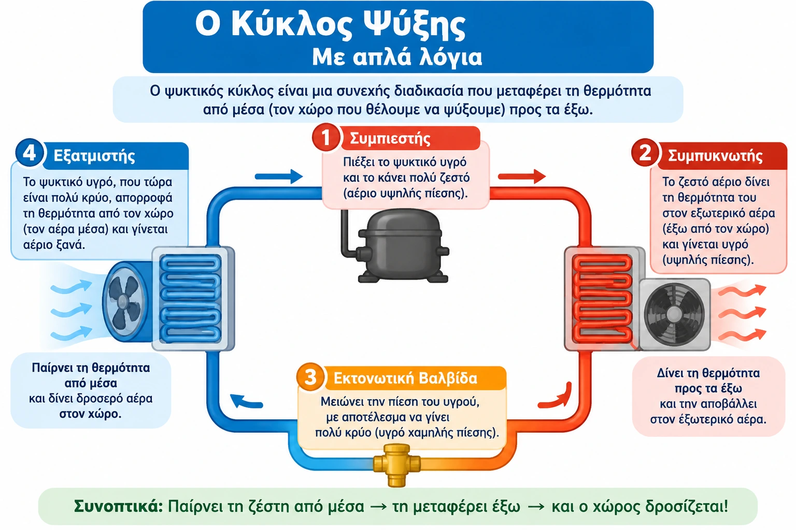
Συμπιεστής – COMPRESSOR
ΑΠΛΑ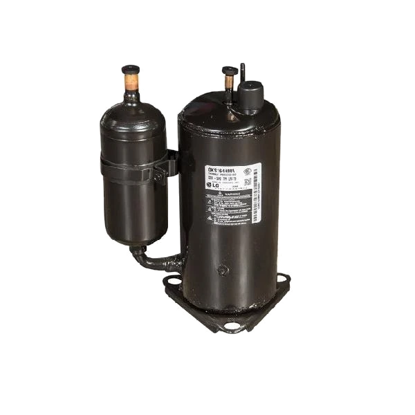
ΤΙ ΚΑΝΕΙ
- Αναρροφά ψυκτικό σε μορφή ατμού
- Αυξάνει την πίεση
- Αυξάνει τη θερμοκρασία
- Προωθεί το ψυκτικό προς τον συμπυκνωτή
ΣΤΟ TROUBLESHOOTING
Εξετάζουμε λειτουργία, ρεύμα, θερμοκρασίες, πιέσεις και ενδείξεις inverter / PCB.
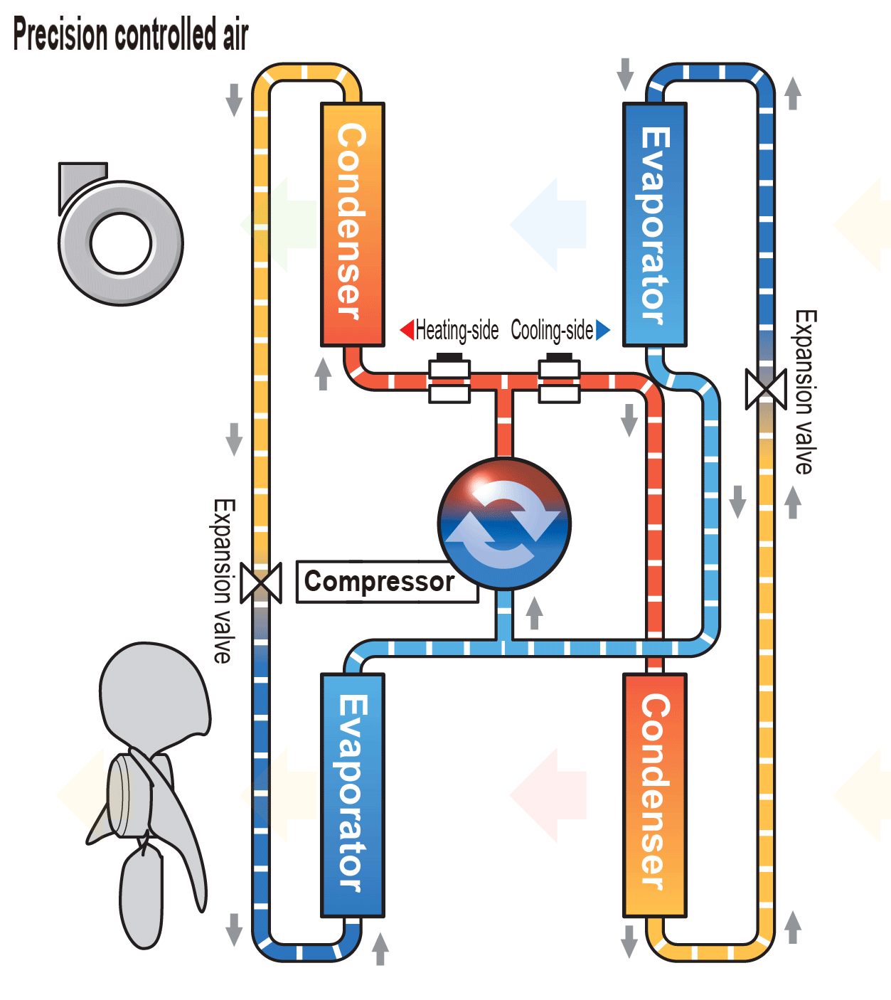
Συμπυκνωτής – CONDENSER
ΣΤΗΝ ΨΥΞΗ
Βρίσκεται στην εξωτερική μονάδα.
Το θερμό ψυκτικό αποβάλλει θερμότητα προς το περιβάλλον και συμπυκνώνεται από αέριο σε υγρό.
ΚΡΙΣΙΜΟ ΣΗΜΕΙΟ
Χρειάζεται επαρκής ροή αέρα και καθαρός εναλλάκτης.
ΠΙΘΑΝΟ ΠΡΟΒΛΗΜΑ
Βρώμικος εναλλάκτης ή ανεπαρκής ανεμιστήρας μπορεί να οδηγήσει σε υψηλή πίεση.
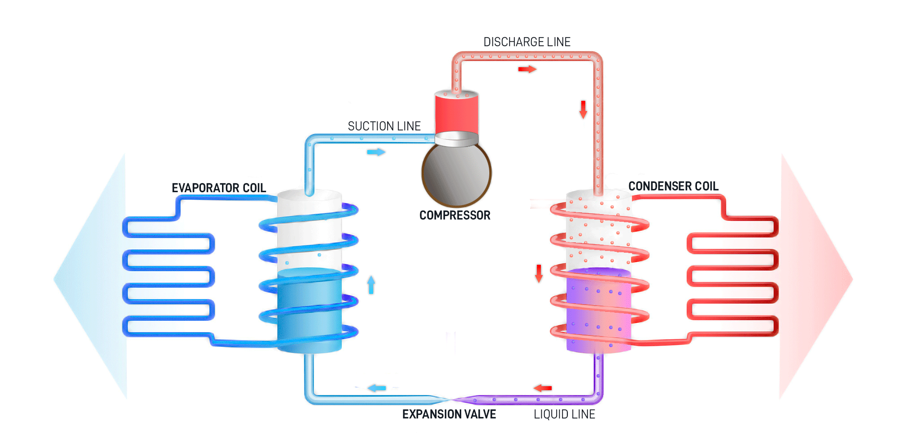
Εκτονωτική βαλβίδα – EEV · Τριχοειδής σωλήνας – Capillary tube
ΛΕΙΤΟΥΡΓΙΑ
- Προκαλεί πτώση πίεσης
- Μειώνει τη θερμοκρασία του ψυκτικού
- Ελέγχει την παροχή προς τον εξατμιστή
- Σε inverter συστήματα χρησιμοποιείται συχνά EEV
EEV = ELECTRONIC EXPANSION VALVE
Η ηλεκτρονική βαλβίδα μεταβάλλει το άνοιγμά της σύμφωνα με τις απαιτήσεις του συστήματος.
TROUBLESHOOTING
Έλεγχος εντολών, αισθητήρων, καλωδίωσης και συμπεριφοράς του κυκλώματος.
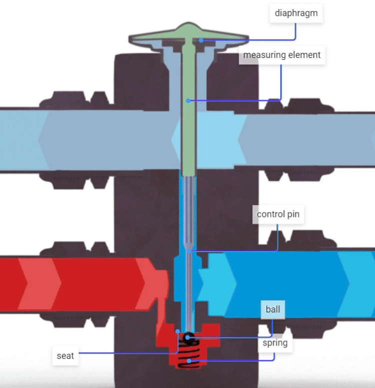
Εξατμιστής – EVAPORATOR
ΣΤΗΝ ΨΥΞΗ
Βρίσκεται στην εσωτερική μονάδα.
Το ψυκτικό απορροφά θερμότητα από τον εσωτερικό αέρα και εξατμίζεται.
ΑΠΟΤΕΛΕΣΜΑ
Ο αέρας που περνά από τον εναλλάκτη ψύχεται και επιστρέφει στον χώρο.
ΤΙ ΕΛΕΓΧΟΥΜΕ
Φίλτρα, airflow, ανεμιστήρα, θερμοκρασίες, αισθητήρες και ψυκτικό κύκλωμα.
Τετράοδη βαλβίδα – 4-WAY VALVE
ΡΟΛΟΣ
Αλλάζει την κατεύθυνση ροής του ψυκτικού.
Έτσι το ίδιο σύστημα μπορεί να παρέχει ψύξη ή θέρμανση.
ΣΤΗΝ ΨΥΞΗ
Εσωτερικός εναλλάκτης → εξατμιστής
Εξωτερικός εναλλάκτης → συμπυκνωτής
ΣΤΗ ΘΕΡΜΑΝΣΗ
Οι ρόλοι των δύο εναλλακτών αντιστρέφονται.
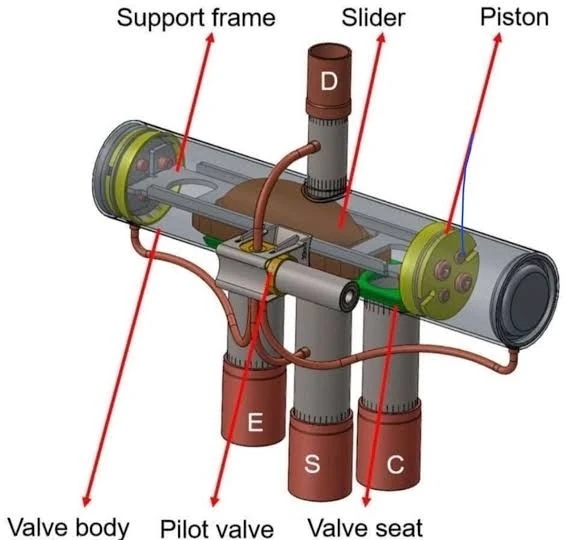
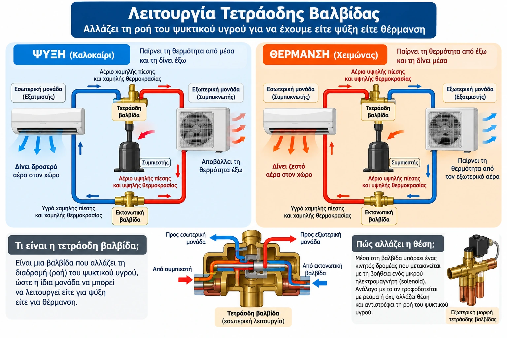
Ψυκτικό μέσο – REFRIGERANT
ΠΡΟΣΟΧΗΡΟΛΟΣ
Το ψυκτικό μεταφέρει θερμότητα μέσα στο κύκλωμα.
Αλλάζει κατάσταση μεταξύ υγρού και ατμού.
ΠΑΡΑΔΕΙΓΜΑΤΑ
R32R410A
Η χρήση και η διαχείριση πρέπει να ακολουθούν τις προδιαγραφές του κατασκευαστή.
ΧΗΜΙΚΗ ΤΑΥΤΟΤΗΤΑ
Πρόκειται για οργανικές ενώσεις που περιέχουν φθόριο, άνθρακα και συχνά χλώριο ή υδρογόνο.
ΒΑΣΙΚΟ ΧΑΡΑΚΤΗΡΙΣΤΙΚΟ
Έχουν εξαιρετικά χαμηλό σημείο βρασμού, γεγονός που τους επιτρέπει να αλλάζουν μορφή (από υγρό σε αέριο) πολύ εύκολα.
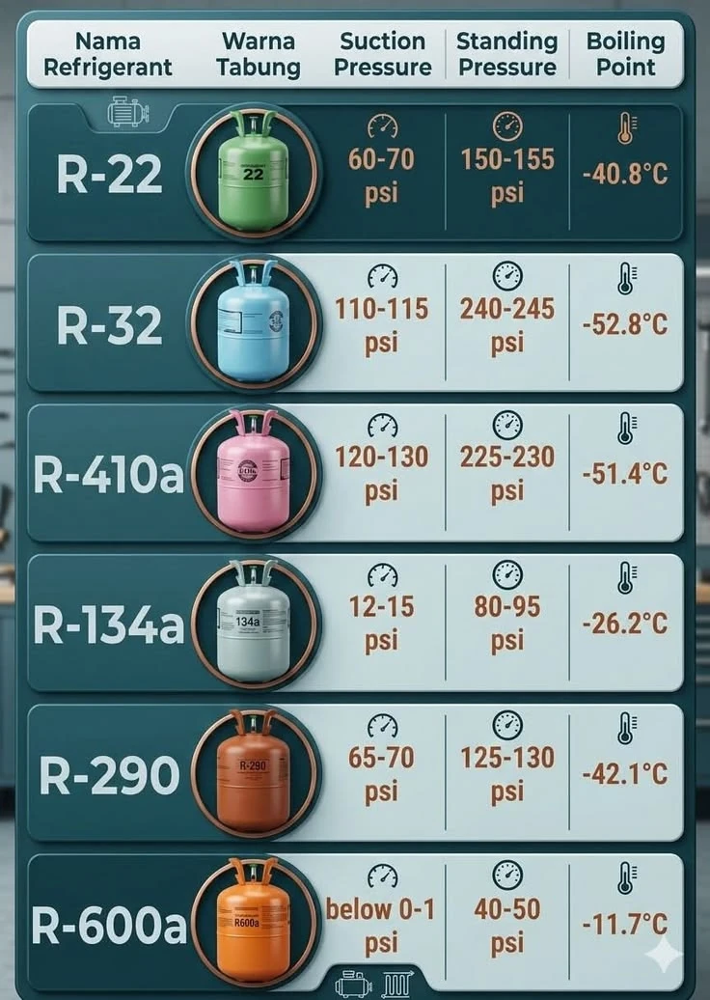
Ψυκτικό μέσο – REFRIGERANT
1η ΓΕΝΙΑ
CFCs · π.χ. R-12Καταργήθηκαν πλήρως γιατί κατέστρεφαν τη στιβάδα του όζοντος.
2η ΓΕΝΙΑ
HCFCs · π.χ. R-22Επίσης υπό πλήρη κατάργηση / απαγόρευση.
3η & 4η ΓΕΝΙΑ
HFCs & HFOs · π.χ. R-410A, R-32Μηδενική επίπτωση στο όζον, αλλά έμφαση στη μείωση του αποτυπώματος του θερμοκηπίου.
ΔΙΑΡΡΟΕΣ & ΣΥΝΤΗΡΗΣΗ
Το φρέον βρίσκεται σε κλειστό κύκλωμα και δεν καταναλώνεται.
Αν λιγοστέψει, σημαίνει ότι υπάρχει τρύπα / διαρροή που πρέπει να εντοπιστεί και να επισκευαστεί από αδειούχο τεχνικό.
Ορισμός
Μετρά τη θερμότητα που εγκλωβίζει ένα αέριο στην ατμόσφαιρα σε σύγκριση με το CO₂, συνήθως για 100 έτη.
Τιμή αναφοράς
Το διοξείδιο του άνθρακα (CO₂) έχει τιμή GWP = 1.
Παραδείγματα
1 τόνος μεθανίου εγκλωβίζει σημαντικά περισσότερη θερμότητα από 1 τόνο CO₂ σε έναν αιώνα.
Πίεση & θερμοκρασία
Low Pressure (LP)
Η πλευρά χαμηλής πίεσης του κυκλώματος.
High Pressure (HP)
Η πλευρά υψηλής πίεσης του κυκλώματος.
Suction
Αναρρόφηση προς τον συμπιεστή.
Discharge
Κατάθλιψη από τον συμπιεστή.
Saturation Temperature
Θερμοκρασία κορεσμού που αντιστοιχεί σε συγκεκριμένη πίεση.
Η πίεση και η θερμοκρασία του ψυκτικού συνδέονται.
Γι’ αυτό ο τεχνικός χρησιμοποιεί μετρήσεις και όχι μόνο την αίσθηση «κρυώνει / δεν κρυώνει».
Superheat & Subcooling
SUPERHEAT
ΥπερθέρμανσηΔιαφορά μεταξύ πραγματικής θερμοκρασίας ατμού και θερμοκρασίας κορεσμού.
Χρησιμοποιείται για την αξιολόγηση της κατάστασης του ψυκτικού στην αναρρόφηση.
SUBCOOLING
ΥπόψυξηΔιαφορά μεταξύ θερμοκρασίας κορεσμού και πραγματικής θερμοκρασίας υγρού.
Χρησιμοποιείται για την αξιολόγηση της πλευράς υγρού.
Βασικά εξαρτήματα Split AC
ΕΣΩΤΕΡΙΚΗ ΜΟΝΑΔΑ
0 εξαρτήματα- Εναλλάκτης / Evaporator
- Ανεμιστήρας
- PCB
- Αισθητήρες
- Φίλτρα
- Περσίδες
- Λεκάνη συμπυκνωμάτων
- Αποχέτευση
ΕΞΩΤΕΡΙΚΗ ΜΟΝΑΔΑ
0 εξαρτήματα- Compressor
- Εναλλάκτης / Condenser
- Ανεμιστήρας
- EEV
- 4-way valve
- PCB / Inverter PCB
- Αισθητήρες
- Service valves
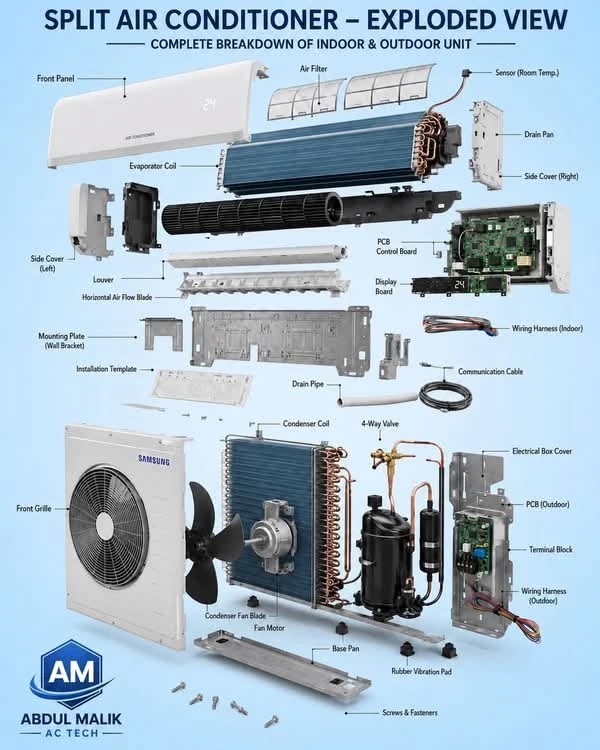
Τεχνολογία Inverter
FIXED SPEED
Ο συμπιεστής λειτουργεί με λογική ON / OFF.
Η ισχύς δεν μεταβάλλεται συνεχώς.
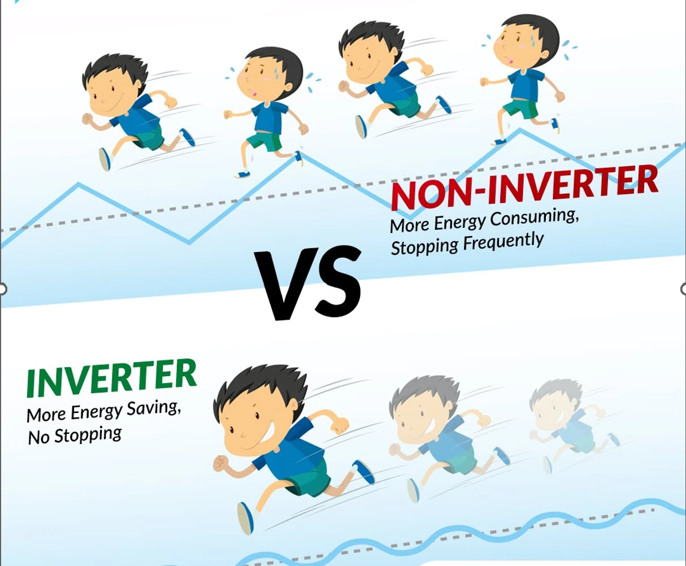
INVERTER
Η συχνότητα λειτουργίας του συμπιεστή μεταβάλλεται ανάλογα με το φορτίο.
Παράλληλα, το σύστημα ελέγχει ανεμιστήρες, EEV και αισθητήρες.
Airflow – Η σημασία της ροής αέρα
TIPΗ ανεπαρκής ροή αέρα μπορεί να επηρεάσει έντονα την απόδοση και τις θερμοκρασίες λειτουργίας.
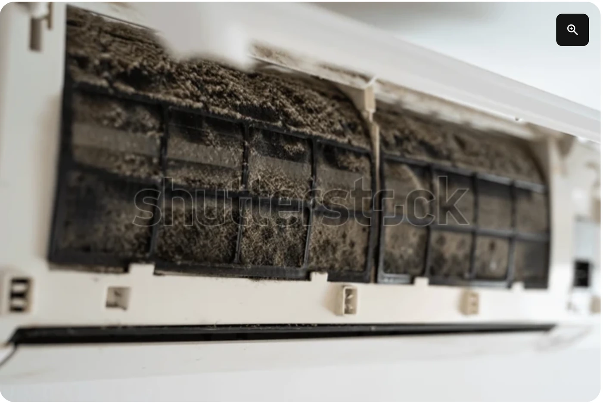
Από τον ψυκτικό κύκλο στο Troubleshooting
ΠΕΡΙΓΡΑΦΗ
- Τι ακριβώς αναφέρει ο πελάτης;
- Πότε εμφανίζεται;
- Σε ψύξη ή θέρμανση;
- Υπάρχει κωδικός βλάβης;
ΒΑΣΙΚΟΙ ΕΛΕΓΧΟΙ
- Τροφοδοσία
- Airflow
- Φίλτρα
- Θερμοκρασίες
- Ανεμιστήρες
- Αισθητήρες
ΚΥΚΛΩΜΑ
- Πιέσεις
- Superheat / Subcooling
- Συμπιεστής
- EEV
- Διαρροές
- Θερμοκρασίες σωληνώσεων
Πρακτικό Case 1
Ελέγχουμε ρυθμίσεις και τρόπο λειτουργίας.
Ελέγχουμε φίλτρα και airflow.
Ελέγχουμε εσωτερικές / εξωτερικές θερμοκρασίες.
Καταγράφουμε μετρήσεις και ευρήματα πριν από συμπέρασμα.
Εφόσον απαιτείται, προχωράμε σε έλεγχο ψυκτικού κυκλώματος.
Ελέγχουμε ανεμιστήρες και εναλλάκτες.
Πρακτικό Case 2
ΣΗΜΑΝΤΙΚΟΠρακτικό Case 3
Έλεγχος εξωτερικού εναλλάκτη.
Έλεγχος ανεμιστήρα εξωτερικής μονάδας.
Έλεγχος συνθηκών περιβάλλοντος.
Έλεγχος αισθητήρων / ελέγχου και κωδικών βλάβης.
Έλεγχος ποσότητας ψυκτικού σύμφωνα με τη διαδικασία του κατασκευαστή.
Έλεγχος για περιορισμό στη ροή του ψυκτικού.
Πρακτική άσκηση – Αναγνώριση εξαρτημάτων
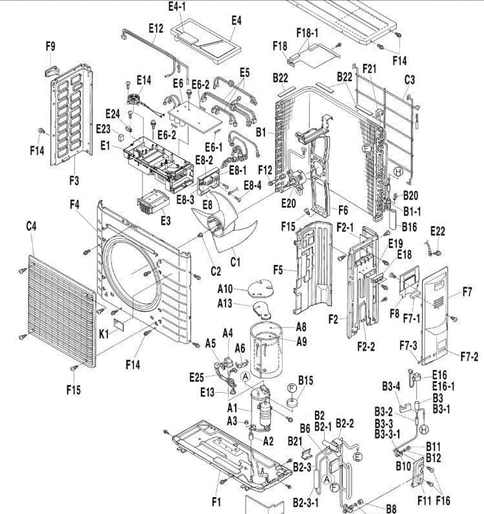
Πρακτική άσκηση – Αναγνώριση εξαρτημάτων
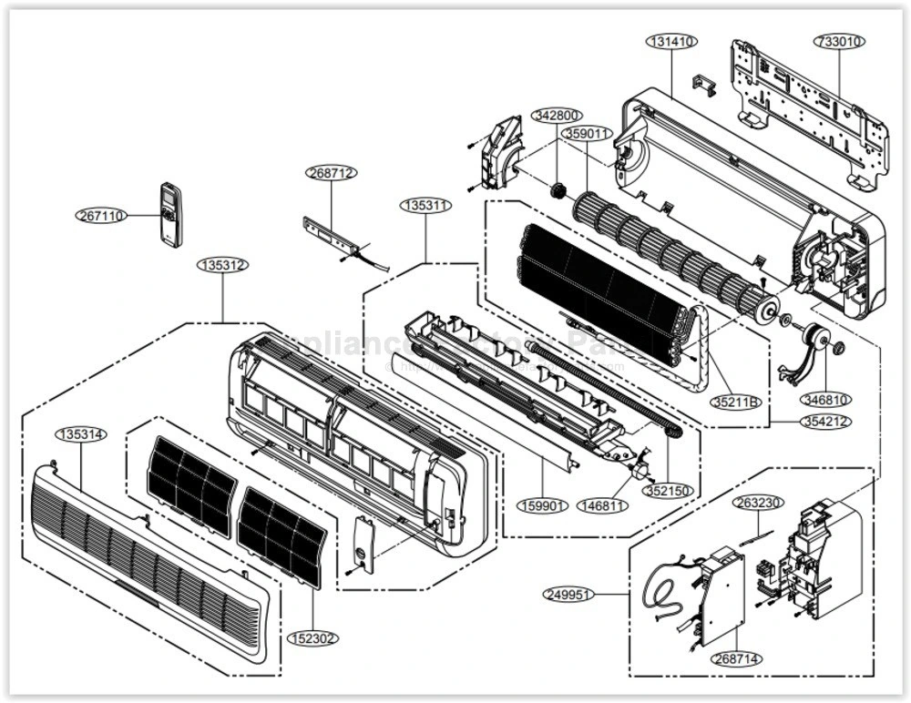
Πρακτική άσκηση – Αναγνώριση εξαρτημάτων
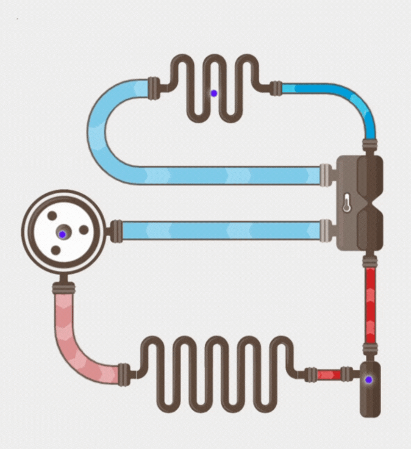